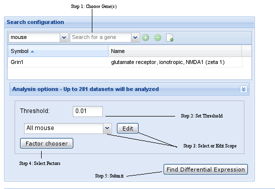
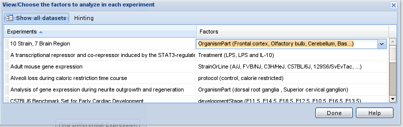
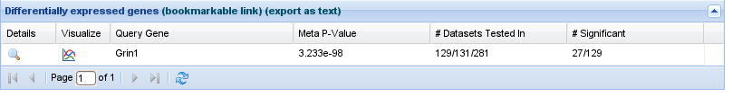
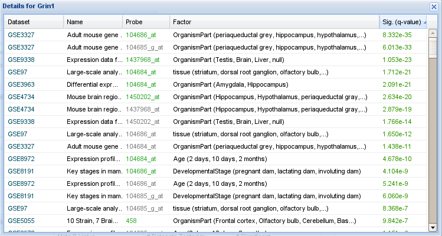

Differential Expression
The differential expression of genes in Gemma is determined by statistical tests run on datasets based on the experiment's
design.
Datasets containing 1 factor and 2 factor values will have differential evidence based on a
t-test.
Datasets with 1 experimental factor and more than 2 factor values will have differential evidence based on a
one way anova.
Datasets with 2 experimental factors and an incomplete block design will have differential evidence based on a
two way anova without interactions.
Datasets with 2 experimental factors and a complete block design will have evidence based on a
2 way anova with interactions.
Note
Not all datasets have a differential expression analysis available. Furthermore, your gene(s) might not be represented in
some datasets. We use the following terms to describe the situation:
-
Dataset set (DSS): The complete list of datasets you selected for analysis. We sometimes call this the 'scope'.
-
Datasets with differential expression analysis: datasets which had a differential expression analysis.
-
Datasets tested in: The datasets which had information about a specific gene. This value is obviously gene-specific.
Summary: the largest number of datasets you can examine a gene in is the "Datasets tested in".
Step by step

Step 1: Choose Gene(s)
To select genes for your search:
-
Select the desired taxon (optional; this makes the searches a little easier to work with)
-
Type symbol or name of the query gene. Gemma will search for the term and show the results in a dropdown list. Select the
gene from the dropdown.
-
Click '+' to add the gene to your working list; if you only want to search one gene, this is not necessary. To remove
previously selected genes from your working list, click '-'.
-
Repeat steps 2 and 3 to add/remove additional query genes.
Alternative method: By clicking on the 'download' button (next to the '-' button), you can enter a list of gene symbols. Gemma will search for them automatically
and populate the gene list with the results.
Step 2: Set Threshold
Genes with a q-value less than the input threshold are returned from the search (default sort
order). The threshold is igored when computing the meta-analysis results.
Step 3: Select Scope
Scope refers to the data sets (also known as expression experiments or studies) that will be included in the search. Gemma
allows users to choose predefined scopes or to create their own.
-
Use the dropdown menu to pick a preset. If you had added your own 'sets', they will be shown in the menu.
-
Click the 'edit' button to bring up a new interface (the 'dataset chooser') for viewing, modifying and creating dataset
sets. See the
Gemma wiki for details about the
dataset chooser.

Step 4: Select Factors
Select the factors for the experiments in the scope. Only experiments with 1 or 2 factors
will be visible. Factor choosing will be made accessible for experiments with 2 factors. Those with 1 factor will be
grayed out.

Step 5: Submit
Click
Find Differential Expression to submit the differential expression search. You will see text that reads
Loading .... Queries will typically take several seconds.
Step 6: Interpret Results
The results contain both the meta-analysis results and the probe-level detailed differential expression results.

Meta Analysis Results
-
Details - Probe level details for the gene, showing differential expression results for each probe
assaying to the gene. See Probe Level Results below.
-
Visualize - Visualize the expression profile of the query gene with the coexpressed gene. Expression profiles for probes meeting the
statistical threshold the user sets are shown in red. Other probes are "greyed out".

-
Query Gene - The input query gene.
-
Meta P-Value - The combined p-value (
Fisher's method) which includes raw p-values from datasets
with differential expression evidence for the query gene. In cases where multiple probes (n) in a dataset map to the same
input query gene, the probes are penalized by multiplying by n. The smallest p-value is then used in the combined p-value.
-
# Datasets Tested In - # datasets with diff evidence for the gene / num datasets with diff results in the
scope / num datasets in the scope.
-
# Significant - # significant probes that met the q value / # datasets with diff evidence for the gene.
Probe Level Results

-
Dataset - The experiment the results come from.
-
Name - Full name of the dataset.
-
Probe - The probe that maps to the query gene. Note that there can be multiple probes per data set for a
given gene. In such cases, all are listed, but only one will be used in the computation of the meta-pvalue (shown in
color). Currently we use the probe with the
best p-value. Because this is an anti-conservative way of resolving the issue, we suggest that you examine the
results for the other probes. Major discrepancies between probes for the same gene in a given experiment would be worth
scrutinizing.
-
Factor - The factors for which the queried gene has differential expression evidence. For example, genes
that belong to experiments analyzed with one way anova will have 1 factor. The factors are listed along with a brief
description of the different
factor values that are available. For example, "Treatment (drug, control)". If the dataset has more than one
factor, only the factor you chose will be listed.
-
Sig. (q-value) - The criteria used to determine whether the differential test (t-test, one way anova, two way
anova) for the gene is significant or not. The q value is the minimum false discovery rate at which this test can be
called significant. Values in color met the threshold you set.